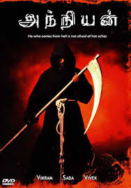

|

|
| Name |
Anniyan |
| Plot |
Ramanujam, who suffers from multiple personality disorder, works as a lawyer by day and a vigilante at night. He uses tips from the 'Garuda Purana' as his tools to expose various antisocial elements. |
| Genre |
Action |
| Release date |
17 June 2008 |
| Director |
S. Shankar |
| Box office |
81 cr |
| IMDB |
8.2/10 |
| Language |
Tamil |
|